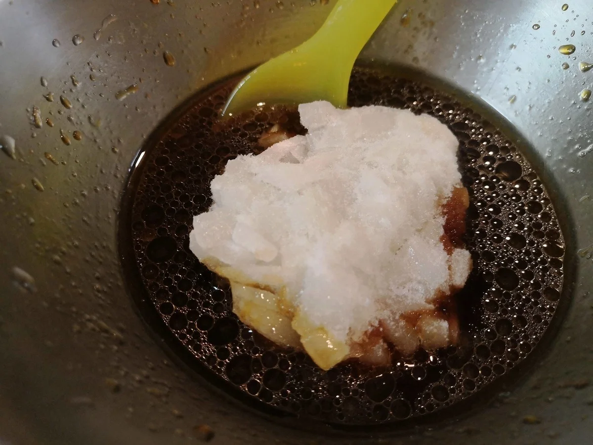

唐揚げ・天ぷら・フライ
おからパウダーの手羽元唐揚げ
おからパウダーを薄めにつけてじっくり揚げ、皮をパリッと仕上げる手羽元の唐揚げです。粉を厚く重ねないので、おからパウダーだけの衣を試してみたい
*写真のいんげんなどの付け合わせは任意です。以下の材料には含めていません。* おからパウダーと片栗粉の衣で鶏むね肉を揚げ、甘酸っぱい新玉ねぎのたれをかける油淋鶏です。私は、カリッとした衣とさっぱりしたたれの組み合わせがぴったりだと感じました。

唐揚げの皮をパリッと揚げたい日もあれば、天ぷらをうどんに添えたい日もあります。おからパウダーは、そんな普段の揚げ物の衣にも使えます。おからパウダーだけを薄くまぶす方法と、片栗粉などを合わせる方法を、料理ごとに使い分けていきましょう。
私は食べることも料理も好きです。厳しく制限しては反動で食べ、リバウンドも経験してきました。だからこそ、揚げ物を食卓からなくすより、食べたい料理を自分で作り、食べる量も考えながら楽しむ方法を大切にしています。
ただし、衣におからパウダーを使っても、揚げ物であることは変わりません。衣が吸う油も、肉の脂も、ソースも料理の一部です。衣の粉を置き換えたことだけで、料理全体が低カロリーになるとは考えないでください。
このカテゴリの衣は、大きく分けて3種類です。材料を見てから選ぶと、「おからパウダーをどこに使えばよいのか」がわかりやすくなります。
粉と水分の釣り合いも大切です。原材料や粒の細かさが違えば、同じ分量でも衣の状態が変わることがあります。水分や粉の調整が書かれた料理では、最初から追加せず、まず記載の分量で混ぜて様子を見てください。
揚げる前には、油の温度を測る温度計と、食品の中心温度を測れる温度計を用意すると確認しやすくなります。油の温度と食品の中心温度は別のものです。油が170℃になっていても、肉の中心が十分に温まったとは限りません。
以下の時間は、原記事で紹介した調理の目安です。時間が来たことや衣の色だけで、食べられると判断しないでください。 肉や魚は中心部まで十分に加熱し、一般的な加熱の目安である中心温度75℃で1分間以上を確認します。特に鶏肉や鶏レバーなどの内臓は、表面だけを揚げて終わりにしないことが大切です。
牡蠣は加熱用を使い、中心部を85～90℃で90秒間以上加熱します。これは油の温度ではありません。厚みや一度に揚げる量によって必要な時間は変わるので、原記事の短い揚げ時間だけを根拠にせず、中心まで加熱できたかを確かめてください。
調理中の注意として、次の点も共通して守ってください。おいしく仕上げることと、安全に調理することを、どちらも大切にしましょう。

写真のいんげんなどの付け合わせは任意で、材料には含めていません。
塩こうじを使った鶏肉は焦げやすいので、衣の色と油温を見ながら揚げます。
観音開きにしても、厚みが残った部分の中心温度を確かめます。揚げた後に少し休ませても、それだけで中心まで十分に火が通ったとは判断しません。
たれは揚げ上がった肉にかけ、衣と一緒に味わってください。
加熱時間は作った時の目安です。容器や調理器具によって仕上がりは変わります。中心まで火が通っていることを確認してください。
おからパウダー油淋鶏の材料・作り方（50kgdiet.com） →
このページは書籍の改訂原稿をもとに掲載しています。元記事は過去の記録のため、材料や表現が異なる場合があります。